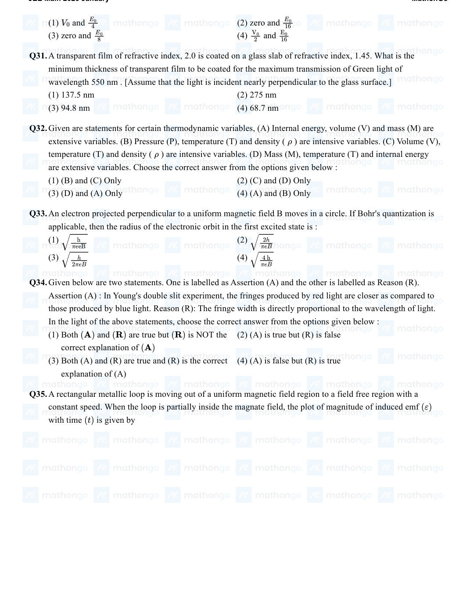

Filter questions
Q1
CHEM-2021-0101-S2-Q031
2021 | 01 Sep | Shift 2
—
Integer
Number of paramagnetic oxides among the following given oxides is ___________. Li2O, CaO, Na2O2, KO2, MgO and K2O (1) 1 (2) 3 (3) 0 (4) 2
Answer: 1
Q2
CHEM-2021-0101-S2-Q031
2021 | 18 Mar | Shift 2
—
MCQ
Given below are two statements: Statement I: Bohr's theory accounts for the stability and line spectrum of Li+ ion. Statement II: Bohr's theory was unable to explain the splitting of spectral lines in the presence of a magnetic field. In the light of the above statements, choose the most appropriate answer from the options given below:
Answer: B
Q3
CHEM-2021-0101-S1-Q035
2021 | 20 Jul | Shift 1
—
MCQ
A s-block element (M) reacts with oxygen to form an oxide of the formula MO2. The oxide is pale yellow in colour and paramagnetic. The element is: (M)
Answer: D
Q4
CHEM-2021-0101-S1-Q045
2021 | 22 Jul | Shift 1
—
MCQ
The set having ions which are coloured and paramagnetic both is -
Answer: A
Q5
CHEM-2021-0101-S1-Q042
2021 | 31 Aug | Shift 1
—
MCQ
Which one of the following lanthanides exhibits oxidation state with diamagnetic nature? (Given for +2 Z Nd = 60, Yb = 70, La = 57, Ce = 58)
Answer: B
Q6
CHEM-2022-0101-S2-Q060
2022 | 26 Jun | Shift 2
—
Integer
Reaction of [Co (H2O)6]2+ with excess ammonia and in the presence of oxygen results into a diamagnetic product. Number of electrons present in t2g -orbitals of the product is
Answer: 6
Q7
CHEM-2022-0101-S2-Q057
2022 | 28 Jun | Shift 2
—
Integer
(CN)6]4− [Fe [Fe (CN)6]3− [Ti (CN)6]3− [Ni (CN)4]2− [Co (CN)6]3− Among the given complexes, number of paramagnetic complexes is
Answer: 2
Q8
CHEM-2023-0101-S1-Q053
2023 | 08 Apr | Shift 1
—
Integer
Which of the following complex is octahedral, diamagnetic and the most stable? (1) Na3[CoCl6] (2) [Ni (NH3)6] Cl2 (3) K3[Co(CN)6] (4) [Co (H2O)6] Cl2
Answer: 3
Q9
CHEM-2023-0101-S1-Q045
2023 | 10 Apr | Shift 1
—
MCQ
The octahedral diamagnetic low spin complex among the following is
Answer: A
Q10
CHEM-2023-0101-S2-Q045
2023 | 13 Apr | Shift 2
—
MCQ
Which of the following complexes will exhibit maximum attraction to an applied magnetic field?
Answer: D
Q11
CHEM-2023-0101-S1-Q051
2023 | 25 Jan | Shift 1
—
Integer
The number of paramagnetic species from the following is [Ni(CN)4]2−, [Ni(CO)4], [NiCl4]2− [Fe(CN)6]4−, [Cu (NH3)4]2+ [Fe(CN)6]3− and [Fe (H2O)6]2+
Answer: 6
Q12
CHEM-2023-0101-S1-Q039
2023 | 29 Jan | Shift 1
—
MCQ
The magnetic behaviour of Li2 O, Na2 O2 and KO2, respectively, are
Answer: C
Q13
CHEM-2024-0101-S1-Q045
2024 | 05 Apr | Shift 1
—
MCQ
Which one of the following complexes will exhibit the least paramagnetic behaviour? [Atomic number, Cr = 24, Mn = 25, Fe = 26, Co = 27 ]
Answer: C
Q14
CHEM-2024-0101-S1-Q036
2024 | 06 Apr | Shift 1
—
MCQ
List - I List - II (Molecule/Species) (Property/Shape) Match List I with List II A. SO2Cl2 I. Paramagnetic Choose the correct answer B. NO II. Diamagnetic C. NO− III. Tetrahedral I− 2 D. 3 IV. Linear from the options given below:
Structured List-I / List-II view
| Label | List-I | List-II | Match |
|---|---|---|---|
| A | SO2Cl2 | Paramagnetic | I |
| B | NO | Diamagnetic | II |
| C | NO− | Tetrahedral I− 2 | III |
| D | 3 | Linear from the options given below: | IV |
Answer: B
Q15
CHEM-2024-0101-S2-Q044
2024 | 31 Jan | Shift 2
—
MCQ
Select the option with correct property:
Answer: D
Q16
CHEM-2025-0101-S1-Q037
2025 | 22 Jan | Shift 1
—
MCQ
If B is magnetic field and μ0 is permeability of free space, then the dimensions of (B/μ0) is
Answer: C
Q17
CHEM-2025-0101-S2-Q033
2025 | 22 Jan | Shift 2
—
MCQ
An electron projected perpendicular to a uniform magnetic field B moves in a circle. If Bohr's quantization is applicable, then the radius of the electronic orbit in the first excited state is:
Answer: A
Q18
CHEM-2025-0101-S2-Q035
2025 | 22 Jan | Shift 2
—
MCQ
A rectangular metallic loop is moving out of a uniform magnetic field region to a field free region with a constant speed. When the loop is partially inside the magnate field, the plot of magnitude of induced emf (ε) with time (t) is given by

Answer: D
Q19
CHEM-2025-0101-S2-Q050
2025 | 22 Jan | Shift 2
—
MCQ
Two long parallel wires X and Y, separated by a distance of 6 cm, carry currents of 5A and 4A, respectively, in opposite directions as shown in the figure. Magnitude of the resultant magnetic field at point P at a distance of 4 cm from wire Y is x × 10−5 T. The value of x is__________. Take permeability of free space as μ0 = 4π × 10−7SI units.
Answer: A
Q20
CHEM-2025-0101-S2-Q044
2025 | 23 Jan | Shift 2
—
MCQ
Match List - I with List - II. List - I List - II
Answer: B
Q21
CHEM-2025-0101-S1-Q046
2025 | 24 Jan | Shift 1
—
MCQ
A current of 5A exists in a square loop of side 1 m. Then the magnitude of the magnetic field B at the centre √2 of the square loop will be p × 10−6 T. where, value of p is _____. [ Take μ0 = 4π × 10−7TmA−1].
Answer: Option 8
Q22
CHEM-2025-0101-S2-Q031
2025 | 24 Jan | Shift 2
—
MCQ
A long straight wire of a circular cross-section with radius ' ' carries a steady current. The current I is a I uniformly distributed across this cross-section. The plot of magnitude of magnetic field B with distance r from the centre of the wire is given by
Answer: D
Q23
CHEM-2025-0101-S2-Q032
2025 | 28 Jan | Shift 2
—
MCQ
An infinite wire has a circular bend of radius a, and carrying a current I as shown in figure. The magnitude of magnetic field at the origin O of the arc is given by:

Answer: D
Q24
CHEM-2025-0101-S2-Q049
2025 | 28 Jan | Shift 2
—
MCQ
A conducting bar moves on two conducting rails as shown in the figure. A constant magnetic field B exists into the page. The bar starts to move from the vertex at time t = 0 with a constant velocity. If the induced EMF is E ∝tn, then value of n is _.

Answer: A
Q25
CHEM-2025-0101-S1-Q034
2025 | 29 Jan | Shift 1
—
MCQ
Consider a long straight wire of a circular cross-section (radius a) carrying a steady current I. The current is uniformly distributed across this cross-section. The distances from the centre of the wire's cross-section at which the magnetic field [inside the wire, outside the wire] is half of the maximum possible magnetic field, any where due to the wire, will be
Answer: C
Q26
CHEM-2025-0101-S2-Q043
2025 | 29 Jan | Shift 2
—
MCQ
Match List - I with List - II. List - I List - II
Answer: D
Q27
CHEM-2025-0101-S2-Q046
2025 | 29 Jan | Shift 2
—
Integer
The magnetic field inside a 200 turns solenoid of radius 10 cm is 2.9 ×. If the solenoid carries a current of 0.29 A, then the length of the solenoid is ________ πcm.
Answer: 8